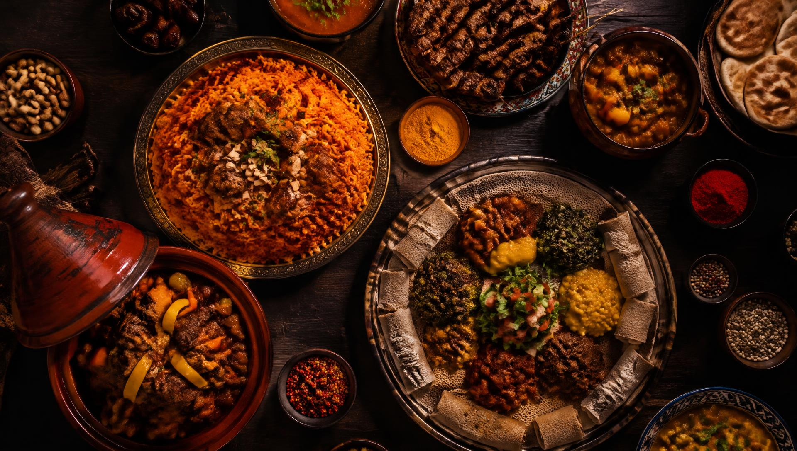

Fonio: the ancient supergrain going global
Chefs from Dakar to New York are embracing fonio , a gluten-free West African grain that cooks in just five minutes.

54 nations · One table
A journey through smoky jollof, fragrant tagines and tangy injera — the recipes, spices and stories of a continent.
Featured dishes
Four dishes that tell the story of their people — save the ones you want to cook.

Nigeria
The smoky, tomato-red soul of every West African party.
1h 15m

Morocco
Slow-cooked lamb, apricots and almonds under a clay cone.
2h 30m

Ethiopia
A spongy sourdough flatbread that is plate, spoon and meal.
3 days (fermenting)

South Africa
Durban curry served in a hollowed loaf of bread.
1h 30m
Explore by region
Latest food trends
Chefs from Dakar to New York are embracing fonio , a gluten-free West African grain that cooks in just five minutes.
New restaurants are pairing berbere and suya spice with classic French technique, earning international acclaim.
Dishes like isombe and misir wot prove that the continent has always excelled at vegetable-forward cooking.